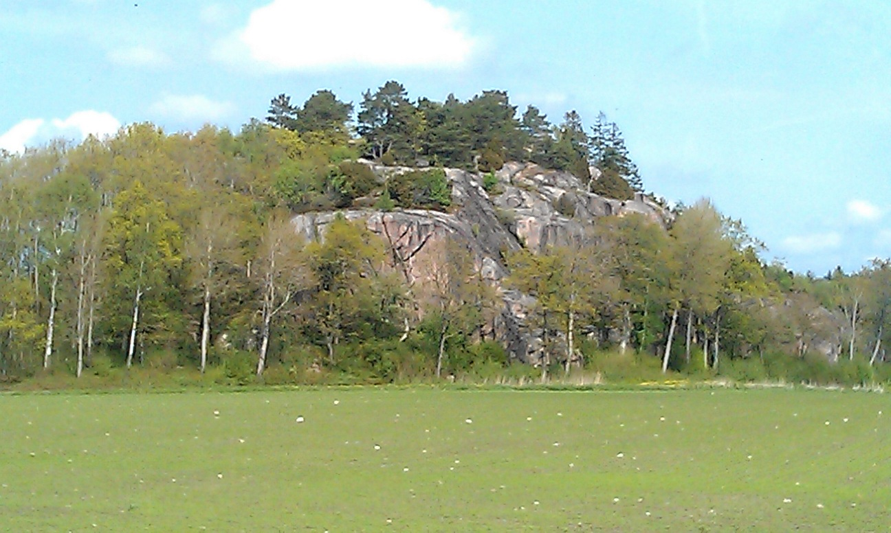

Lat: 58.41890 Long: 11.43736
Smörkullen
Sydvänd klippa som torkar fort efter regn.
Parkera vid ladan på Röe gård och följ vandringstigen norrut ca:200m efter åkern. Klippan syns från parkeringen.
Foto visar Smörkullen sed från parkeringen vid Röe gård.
Lederna och namn från vänster till höger på skissen
Stefan Weddmark / Stefan Bäckström
Stefan Bäckström / Stefan Weddmark
Stefan Bäckström / Stefan Weddmark
Stefan Weddmark / Stefan Bäckström
Kategori:Bohuslän
--
Bultfeber
21 maj 2012 kl. 09.14 (CEST)
Copyright (C) Permission is granted to copy, distribute and/or modify this document under the terms of the GNU Free Documentation License, Version 1.3